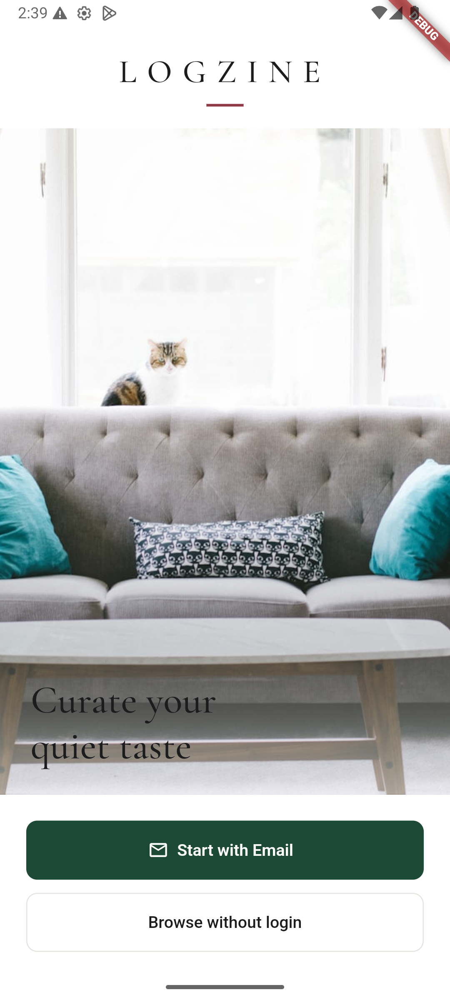
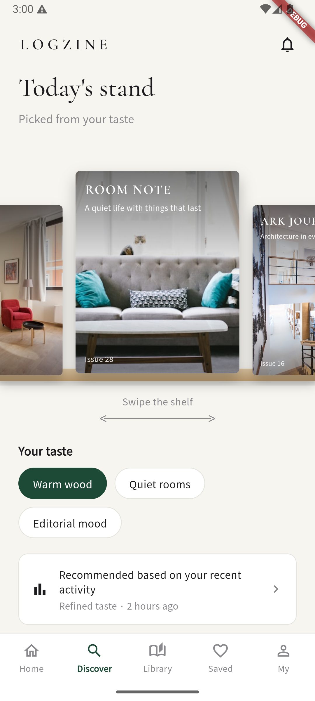
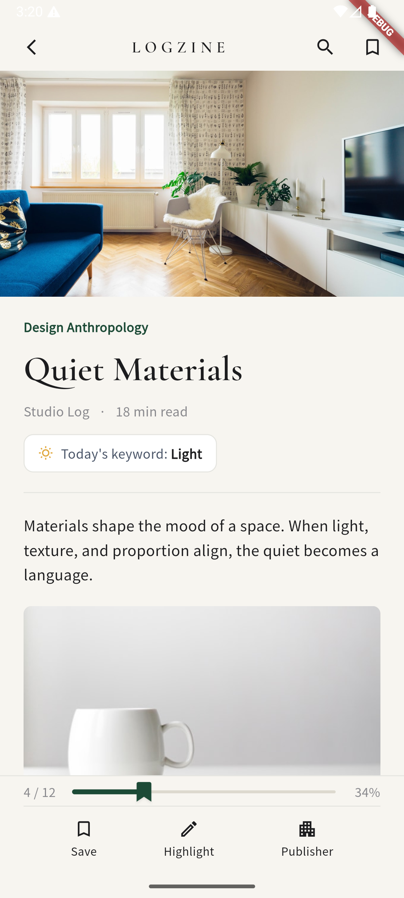
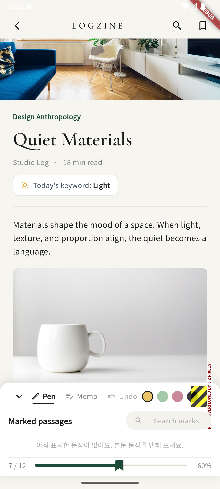

사진 몇 장으로 나의 무드를 읽고, 꼭 맞는 독립 매거진을 추천받고, 밑줄과 메모를 남기며 조용히 읽는 — 취향 기반 에디토리얼 매거진 앱.
Android 전용 · 설치 시 '알 수 없는 출처' 허용 필요




실제 구동 중인 Flutter 앱 화면입니다 (Android 에뮬레이터 캡처)
로그인부터 읽기 기록까지, 앱의 모든 화면이 하나의 취향 데이터로 이어지도록 설계했습니다.
좋아하는 공간 사진을 올리면 무드를 분석해 Calm · Interior · Editorial 같은 취향 태그를 제안합니다. 태그를 다듬고 코멘트를 더해 나만의 취향 프로필을 만듭니다.
나무 선반 위에 큐레이션된 매거진들. 스와이프로 훑어보고, "Why this issue"에서 이 매거진이 왜 나에게 왔는지 추천 이유를 투명하게 보여줍니다.
문장을 탭해 네 가지 색으로 하이라이트하고, 메모를 남기고, 북마크 리본 슬라이더로 읽기 진행률을 따라갑니다. 표시한 문장은 Marked passages에서 검색됩니다.
읽던 매거진의 진행률, 저장한 글, 팔로우한 발행사가 내 서재에 쌓입니다. 홈에서는 이어 읽기와 최근 하이라이트로 다시 이어집니다.
전 화면을 Flutter로 구현했고, 로그인부터 서재까지 전체 플로우가 실제로 연결되어 동작합니다. 실행 방법과 개발 로드맵은 저장소의 README에 정리되어 있습니다.